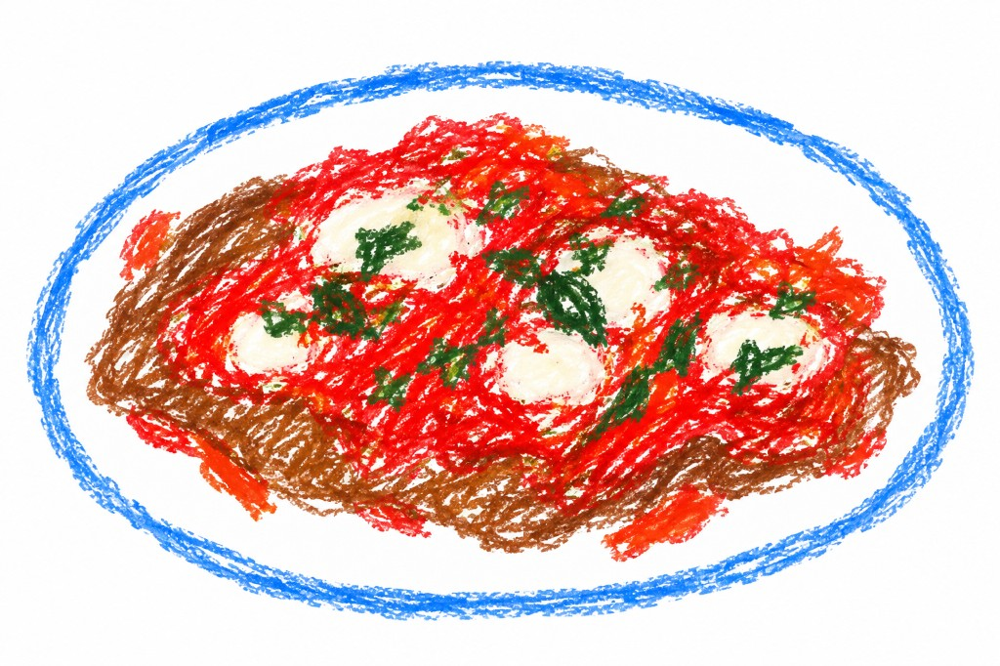

#papa
Fettina di carne alla pizzaiola
Versione di lusso della veloce e classica (per quelli di una certa età) fettina in padella, quella che veniva saltata con un goccio d'olio e spadellata nel piatto col suo sughetto di cottura.
Ingredienti
- 4 o 5 pomodorini
- 1 spicchio d'aglio
- origano
- capperi, salati o sott'aceto (a piacere)
- 1 fettina di carne
- sale
Preparazione
Si parte facendo saltare in padella 4 o 5 pomodorini con uno spicchio d'aglio: spaccate i pomodorini e fateli appassire a piacere con lo spicchio d'aglio, che non dovrebbe bruciare proprio perché ci sono i pomodorini.
Aggiungete un pizzico di origano e, per i più goduriosi, qualche cappero (salato o sott'aceto, a piacere).
Quando i pomodorini saranno appassiti, appoggiate la fettina di carne. Dopo 2 minuti giratela e aggiungete un pizzico di sale: se avete usato i capperi salati, potrebbe non essere necessario aggiungere sale.
Dopo altri 2 minuti la carne è pronta col suo sughetto di pomodoro di guarnizione, perfetto per la scarpetta. Buon appetito.
← Torna alle ricette